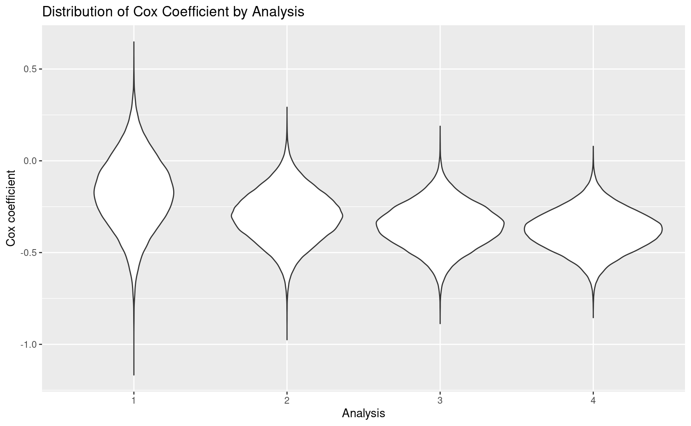
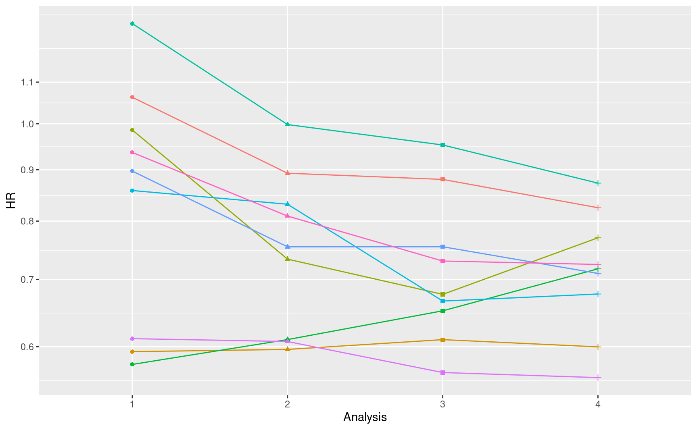

library(gsDesign)
library(simtrial)
library(dplyr)
library(gsdmvn)
## Set the enrollment rates
my_enrollRates <- tibble::tibble(
Stratum = "All",
duration = c(2, 2, 2, 6),
rate = c(6, 12, 18, 24)
)
## Set the failure rates
my_failRates <- tibble::tibble(
Stratum = "All",
duration = 1,
failRate = log(2) / 9,
hr = 0.65,
dropoutRate = 0.001
)
## Set the number of simulations
my_nsim <- 1e+5
## Create a group sequential design for survival outcome
my_gsSurv <- gsSurv(
k = 2,
test.type = 1,
alpha = 0.025,
beta = 0.2,
astar = 0,
timing = 0.7,
sfu = sfLDOF,
sfupar = c(0),
sfl = sfLDOF,
sflpar = c(0),
lambdaC = log(2) / 9,
hr = 0.65,
hr0 = 1,
eta = 0.001,
gamma = c(6, 12, 18, 24),
R = c(2, 2, 2, 6),
S = NULL,
T = NULL,
minfup = NULL,
ratio = 1
)
# Update my_gsSurv with gsDesign() to get integer event counts
my_gsDesign <- gsDesign(
k = my_gsSurv$k,
test.type = 1,
alpha = my_gsSurv$alpha,
beta = my_gsSurv$beta,
sfu = my_gsSurv$upper$sf,
sfupar = my_gsSurv$upper$param,
n.I = ceiling(my_gsSurv$n.I),
maxn.IPlan = ceiling(my_gsSurv$n.I[my_gsSurv$k]),
delta = my_gsSurv$delta,
delta1 = my_gsSurv$delta1,
delta0 = my_gsSurv$delta0
)
set.seed(123)
my_simfix <- simfix( # Number of simulations to perform.
nsim = my_nsim,
# Total sample size per simulation.
sampleSize = ceiling(max(my_gsSurv$eNC) + max(my_gsSurv$eNE)),
# A tibble with
# (1) strata specified in `Stratum`
# (2) probability (incidence) of each stratum in `p`.
strata = tibble::tibble(Stratum = "All", p = 1),
# Targeted event count for analysis.
# Here we only target on the 1st IA only.
targetEvents = my_gsDesign$n.I[1],
# Vector of treatments to be included in each block
block = c(rep("Control", 2), rep("Experimental", 2)),
# Piecewise constant enrollment rates by time period.
enrollRates = my_enrollRates,
# Piecewise constant control group failure rates,
# hazard ratio for experimental vs control,
# and dropout rates by stratum and time period.
failRates = my_failRates,
# `timingType` has up to 5 elements indicating different options for data cutoff.
# `timingType = 1`: uses the planned study duration
# `timingType = 2`: the time the targeted event count is achieved
# `timingType = 3`: the planned minimum follow-up after enrollment is complete
# `timingType = 4`: the maximum of planned study duration and targeted event count cuts (1 and 2)
# `timingType = 5`: the maximum of targeted event count and minimum follow-up cuts (2 and 3)
timingType = 2
)
# Save the simulation data
save(my_gsDesign, file = "./data/simulation_gs_power_ahr_my_gsDesign.Rdata")
save(my_simfix, file = "./data/simulation_gs_power_ahr_my_simfix.Rdata")4 Introduction to gsdmvn, gsDesign2, and simtrial
simtrial, gsDesign2, and gsdmvn are under development and are hosted on GitHub. Below are the GitHub repository links to the source code:
- simtrial: https://github.com/Merck/simtrial
- gsDesign2: https://github.com/Merck/gsDesign2
- gsdmvn: https://github.com/Merck/gsdmvn
Note
As of June 14, 2023, the gsdmvn package has been integrated into the gsDesign2 package and archived on GitHub. For future projects, we recommend using gsDesign2 (now available from CRAN) directly. Despite the fact that the code within this material has not been updated, it remains functional provided you install the specific development versions detailed in the preface.
4.1 simtrial
The R package simtrial targets on time-to-event trial simulation under the piecewise model. It uses logrank and weighted logrank for analysis. It can simulate both fixed and group sequential design, also potential to simulate adaptive design. Its validation is near completion (thanks to AP colleagues and Amin Shirazi).
In simtrial, there are several functions to generate simulated datasets:
-
simfix(): Simulation of fixed sample size design for time-to-event endpoint -
simfix2simPWSurv(): Conversion of enrollment and failure rates fromsimfix()tosimPWSurv()format -
simPWSurv(): Simulate a stratified time-to-event outcome randomized trial
There are also functions to cut data for analysis:
-
cutData(): Cut a dataset for analysis at a specified date -
cutDataAtCount(): Cut a dataset for analysis at a specified event count -
getCutDateForCount(): Get date at which an event count is reached
Most importantly, there are functions for analysis:
-
tenFH(): Fleming-Harrington weighted logrank tests -
tenFHcorr(): Fleming-Harrington weighted logrank tests plus correlations -
tensurv(): Process survival data into counting process format -
pMaxCombo(): MaxCombo p-value -
pwexpfit(): Piecewise exponential survival estimation -
wMB(): Magirr and Burman modestly weighted logrank tests
In simtrial, there are reverse engineered datasets:
-
Ex1delayedEffect: Time-to-event data example 1 for non-proportional hazards working group -
Ex2delayedEffect: Time-to-event data example 2 for non-proportional hazards working group -
Ex3curewithph: Time-to-event data example 3 for non-proportional hazards working group -
Ex4belly: Time-to-event data example 4 for non-proportional hazards working group -
Ex5widening: Time-to-event data example 5 for non-proportional hazards working group -
Ex6crossing: Time-to-event data example 6 for non-proportional hazards working group -
MBdelayed: Simulated survival dataset with delayed treatment effect
4.2 gsDesign2
The R package gsDesign2 has the main functions listed as follows.
-
AHR(): Average hazard ratio under non-proportional hazards -
eAccrual(): Piecewise constant expected accrual -
eEvents_df(): Expected events observed under piecewise exponential model -
ppwe(): Estimate piecewise exponential cumulative distribution function -
s2pwe(): Approximate survival distribution with piecewise exponential distribution -
tEvents(): Predict time at which a targeted event count is achieved
4.3 gsdmvn
The R package gsdmvn extends the Jennison and Turnbull (2000) computational model to non-constant treatment effects. The bound supports functions include
-
gs_b(): direct input of bounds; -
gs_spending_bound(): spending function bounds.
Besides, it covers three models for analysis.
- Average hazard ratio model (see detailed description in Section 3.2)
-
gs_power_ahr(): Power computation -
gs_design_ahr(): Design computations
-
- Weighted logrank model (see detailed description in Chapter 6)
-
gs_power_wlr(): Power computation -
gs_design_wlr(): Design computations
-
- MaxCombo model (see detailed description in Chapter 8)
-
gs_power_combo(): Power computation -
gs_design_combo(): Design computations
-
4.4 Simulation
In this section, we conduct three simulations.
The first simulation is to compare the simulated power and asymptotic power. Specifically speaking, we compare the results from gsdmvn::gs_power_ahr() with that from simtrial::simfix(). The details of this simulation can be found in Section 4.4.1.
The second simulation is to compare the simulated power and asymptotic power. Specifically speaking, we compare the results from gsDesign2::AHR() with that from simtrial::simPWSurv(). The details of this simulation can be found in Section 4.4.2.
The third simulation is to compare the estimation of \(\beta\) by MLE and weighted summation as in Section 3.2. The details of this simulation can be found in Section 4.4.3.
4.4.1 Simulation 1: Compare the IA power by gs_power_ahr() and simulation sim_fix()
This section compares the simulated power and asymptotic power. The simulated power is calculated by simtrial::simfix(), and the asymptotic power is calculated by gsdmvn::gs_power_ahr(). To conduct the comparison, we first save the output of simtrial::simfix() by running the following code chunk. After that, we simply load the simulation results and compare it with the asymptotic power.
load("./data/simulation_gs_power_ahr_my_simfix.Rdata")
load("./data/simulation_gs_power_ahr_my_gsDesign.Rdata")
## Set the enrollment rates
my_enrollRates <- tibble::tibble(
Stratum = "All",
duration = c(2, 2, 2, 6),
rate = c(6, 12, 18, 24)
)
## Set the failure rates
my_failRates <- tibble::tibble(
Stratum = "All",
duration = 1,
failRate = log(2) / 9,
hr = 0.65,
dropoutRate = 0.001
)
my_nsim <- 1e+5
# Calculate the simulated power at the 1st IA
my_sim_IA_power <- as.numeric(my_simfix %>% summarize(mean(Z <= -my_gsDesign$upper$bound[1])))
# Calculate the power by gs_ahr_power() at the 1st IA
out <- gs_power_ahr(
enrollRates = my_enrollRates,
failRates = my_failRates,
ratio = 1,
events = my_gsDesign$n.I, # set number of events the same as my_gsDesign above from gsDesign()
analysisTimes = NULL,
binding = FALSE,
upper = gs_spending_bound,
upar = list(sf = gsDesign::sfLDOF, total_spend = 0.025, param = NULL, timing = NULL, theta = 0),
lower = gs_spending_bound,
lpar = list(sf = gsDesign::sfLDOF, total_spend = 0.2, param = NULL, timing = NULL, theta = 0),
test_upper = TRUE,
test_lower = FALSE
)
my_ahr_IA_power <- out$Probability[1]
cat("The power at the 1st IA by gs_power_ahr() is:", my_ahr_IA_power, "\n")
#> The power at the 1st IA by gs_power_ahr() is: 0.4605649
cat("The power at the 1st IA by", my_nsim, "simulation is:", my_sim_IA_power, "\n")
#> The power at the 1st IA by 1e+05 simulation is: 0.46655
4.4.2 Simulation 2: Compare AHR by gsDesign2::AHR() and simtrial::simPWSurv()
This section compares the simulated AHR and asymptotic AHR The simulated power is calculated by simtrial::simPWSurv(), and the asymptotic power is calculated by gsDesign2::AHR(). To conduct the comparison, we first save the output of simtrial::simPWSurv() by running the following code chunk. After that, we simply load the simulation results and compare it with the asymptotic AHR
library(survival)
library(dplyr)
library(simtrial)
# Set the sample size
my_N <- 500
# Set the analysis time, i.e., there are 4 looks
my_analysisTimes <- c(12, 20, 28, 36)
# Set the enrollment rates
# This format of enrollment rates is design for simtrial::simfix()
# If it is later used to simtrial::simPWSurv(),
# function simtrial::simfix2simPWSurv() can used for transformation
my_enrollRates <- tibble(
Stratum = "All",
duration = 12,
rate = my_N / 12
)
# Set the failure rates
# This format of failure rates is design for simtrial::simfix()
# If it is later used to simtrial::simPWSurv(),
# function simtrial::simfix2simPWSurv() can used for transformation
my_failRates <- tibble(
Stratum = "All",
duration = c(4, 100),
failRate = log(2) / 15,
hr = c(1, 0.6),
dropoutRate = 0.001
)
# Set number of simulations
my_nsim <- 10
# Set up matrix for simulation results
results <- matrix(0, nrow = my_nsim * 4, ncol = 6)
colnames(results) <- c("Sim", "Analysis", "Events", "beta", "var", "logrank")
# Set the index for results row
ii <- 1
set.seed(123)
for (sim in 1:my_nsim) {
# Simulate a trial
ds <- simPWSurv( # Generate my_N observations
n = my_N,
# Use the same enrollRates as that in AHR
enrollRates = my_enrollRates,
# Conversion of failRates from simfix() to simPWSurv() format
failRates = simfix2simPWSurv(my_failRates)$failRates,
# Conversion of dropoutRates from simfix() to simPWSurv() format
dropoutRates = simfix2simPWSurv(my_failRates)$dropoutRates
)
# For each generated my_N observations
# Go through pre-defined 4 looks
for (j in seq_along(my_analysisTimes)) {
# Cut data at specified analysis times
# Use cutDataAtCount to cut at event count
# des is a dataset ready for survival analysis
dsc <- ds %>% cutData(my_analysisTimes[j])
# 1st column of results records the index of the simulation
results[ii, 1] <- sim
# 2nd column of results records the index of the look
results[ii, 2] <- j
# 3rd column of results records the number of events
results[ii, 3] <- sum(dsc$event)
# Apply Cox model
cox <- coxph(Surv(tte, event) ~ Treatment, data = dsc)
# 4th column of results records the number log HR
results[ii, 4] <- as.numeric(cox$coefficients)
# 5th column of results records the variance
results[ii, 5] <- as.numeric(cox$var)
# Logrank test
Z <- dsc %>%
tensurv(txval = "Experimental") %>%
tenFH(rg = tibble::tibble(rho = 0, gamma = 0))
# 5th column of results records the logrank
results[ii, 6] <- as.numeric(Z$Z)
# Increate the row index
ii <- ii + 1
}
}
save(results, file = "./data/simulation_AHR_simPRSurv.Rdata")# Calculate the simulated AHR
load("./data/simulation_AHR_simPRSurv.Rdata")
# Distribution of Cox coefficient
ggplot(
tibble::as_tibble(results),
aes(x = factor(Analysis), y = beta)
) +
geom_violin() +
ggtitle("Distribution of Cox Coefficient by Analysis") +
xlab("Analysis") +
ylab("Cox coefficient")
# Variability of results
ggplot(
filter(tibble::as_tibble(results), Sim < 10) %>%
mutate(Sim = factor(Sim), Analysis = factor(Analysis)),
aes(x = Analysis, y = exp(beta), group = Sim, col = Sim)
) +
geom_line(show.legend = FALSE) +
geom_point(aes(shape = Analysis), show.legend = FALSE) +
scale_y_log10(breaks = seq(.6, 1.1, .1)) +
ylab("HR")
# Comparison of asymptotic vs simulation
AHR_simulated <- tibble::as_tibble(results) %>%
group_by(Analysis) %>%
summarize(
AHR = exp(mean(beta)),
Events = mean(Events),
info = 1 / mean(var(beta)),
info0 = Events / 4
) %>%
select(AHR, Events, info, info0)
colnames(AHR_simulated) <- c("AHR_sim", "Events_sim", "info_sim", "info0_sim")
# Calculate the AHR asymptotically
# gsDesign2::AHR() uses asymptotic distribution
# We will compare its outputs with the simulated outputs
# The simulated outputs is calculated by simtrial::simPWSurv()
# Set the sample size the same as simPWSurv()
my_N <- 500
# Set the analysis time the same as simPWSurv()
my_analysisTimes <- c(12, 20, 28, 36)
# Set the enrollment rates the same as simPWSurv()
my_enrollRates <- tibble(
Stratum = "All",
duration = 12,
rate = my_N / 12
)
# Set the failure rates the same as simPWSurv()
my_failRates <- tibble(
Stratum = "All",
duration = c(4, 100),
failRate = log(2) / 15,
hr = c(1, 0.6),
dropoutRate = 0.001
)
AHR_asymptotics <- gsDesign2::AHR(
enrollRates = my_enrollRates,
failRates = my_failRates,
totalDuration = my_analysisTimes,
ratio = 1
)
colnames(AHR_asymptotics) <- c("Time", "AHR_asy", "Events_asy", "info_asy", "info0_asy")
# Compare the results
cbind(AHR_asymptotics, AHR_simulated) %>%
gt::gt() %>%
gt::fmt_number(columns = c(2, 4, 5, 6, 8, 9), decimals = 4) %>%
gt::fmt_number(columns = c(3, 7), decimals = 2)| Time | AHR_asy | Events_asy | info_asy | info0_asy | AHR_sim | Events_sim | info_sim | info0_sim |
|---|---|---|---|---|---|---|---|---|
| 12 | 0.8395 | 107.39 | 26.3710 | 26.8486 | 0.8415 | 107.25 | 26.2593 | 26.8130 |
| 20 | 0.7379 | 207.90 | 50.6695 | 51.9741 | 0.7397 | 207.71 | 50.8936 | 51.9281 |
| 28 | 0.7000 | 279.10 | 68.2263 | 69.7759 | 0.7012 | 278.93 | 67.9878 | 69.7321 |
| 36 | 0.6832 | 331.29 | 81.3779 | 82.8227 | 0.6839 | 331.19 | 80.6198 | 82.7969 |
4.4.3 Simulation 3: Compare \(\beta\) by MLE and weighted summation
This section compares the AHR estimated by MLE (see theoretical details in ?sec-AhrMLE) and weighted summation (see theoretical details in ?sec-AhrWeightedSum).
library(dplyr)
library(gt)
my_nsim <- 10
my_nNewtonRaphson <- 10
compare_results <- matrix(0, nrow = my_nsim, ncol = 2)
set.seed(123)
for (sim in 1:my_nsim) {
# Generate the number of change points, i.e., total number of timeline piece - 1
sim_M <- sample(3:10, size = 1)
sim_d0_start <- sample(4:8, size = 1)
sim_d1_start <- sim_d0_start - 3
sim_T0_start <- sample(10:20, size = 1)
sim_T1_start <- sim_T0_start + 1
# Generate simulated data
obs_data <- data.frame( # m = 1:5,
m = sim_M,
# d0 = 4:8,
d0 = seq(from = sim_d0_start, length.out = sim_M),
# d1 = 1:5,
d1 = seq(from = sim_d1_start, length.out = sim_M),
# T0 = 10:14,
T0 = seq(from = sim_T0_start, length.out = sim_M),
# T1 = 11:15
T1 = seq(from = sim_T1_start, length.out = sim_M)
) %>%
mutate(
lambda0 = d0 / T0,
lambda1 = d1 / T1,
HR = lambda1 / lambda0,
# beta_m
gamma = log(HR),
# Var(beta_m)
vargamma = 1 / d0 + 1 / d1
)
# Estimate beta by weighted summation
# beta = variable `logAHR`
estimate_beta_WS <- obs_data %>%
summarise(
wsum = sum(1 / vargamma),
# estimation of beta_WS
beta_WS = sum(gamma / vargamma) / wsum,
# variance of the estimation of beta_WS
var = sum(vargamma^(-1))^(-1),
# standard derivation of the estimation of beta_WS
se = sqrt(var),
# AHR: average of lambda_{1,m}/lambda_{0,m}
AHR = exp(beta_WS)
)
compare_results[sim, 1] <- estimate_beta_WS$beta_WS
# Estimate beta by MLE
beta_MLE <- estimate_beta_WS$beta_WS
# beta_MLE_seq <- beta_MLE # ensure convergence
for (i in 1:my_nNewtonRaphson) {
## Calculate the first order derivative at the value of beta_k
temp_beta_d1 <- obs_data %>%
summarise(beta_d1 = -sum((d0 + d1) * T1 * exp(beta_MLE) / (T0 + T1 * exp(beta_MLE)))
+
sum(d1))
beta_d1_curr <- temp_beta_d1$beta_d1
## Calculate the second order derivative at the value of beta_k
temp_beta_d2 <- obs_data %>%
summarise(beta_d2 = sum((T1 * exp(beta_MLE))^2 * (d0 + d1) / (T0 + T1 * exp(beta_MLE))^2)
-
sum(((d0 + d1) * T1 * exp(beta_MLE)) / (T0 + T1 * exp(beta_MLE))))
beta_d2_curr <- temp_beta_d2$beta_d2
## Update beta by Newton-Raphson method, i.e.,
## beta_k+1 = beta_k - l'(beta_k)/l''(beta_k)
beta_MLE <- beta_MLE - beta_d1_curr / beta_d2_curr
# beta_MLE_seq <- c(beta_MLE_seq, beta_MLE)
}
compare_results[sim, 2] <- beta_MLE
}
colnames(compare_results) <- c("Weighted Summation", "MLE")
save(compare_results, file = "./data/simulation_MLE_vs_WS.Rdata")load("./data/simulation_MLE_vs_WS.Rdata")
my_nsim <- 1e+5
head(compare_results)
#> Weighted Summation MLE
#> [1,] -0.4139139 -0.4158463
#> [2,] -0.6729929 -0.6772665
#> [3,] -0.4203335 -0.4207679
#> [4,] -0.5409583 -0.5530679
#> [5,] -0.4247562 -0.4252013
#> [6,] -0.7252355 -0.7411065
cat(
"The MSE between MLE and weighted summation is ",
sum((compare_results[, 1] - compare_results[, 2])^2) / my_nsim, "\n"
)
#> The MSE between MLE and weighted summation is 4.464504e-05